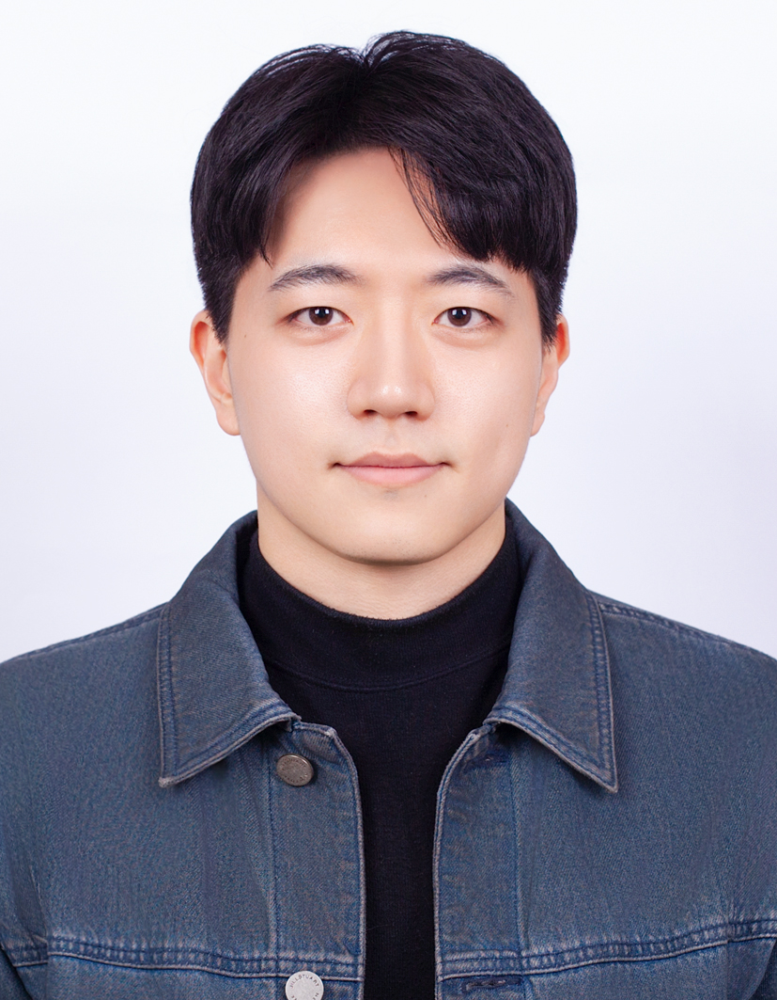

Jae Hyun Ryu
Ph.D. Candidate in Chemical and Biological Engineering
Computational Scientist
best describes who I am. My research bridges computational chemistry and machine learning, with a focus on expansive configurational space systems.
I am particularly interested in developing and applying machine learning force fields in reaction spaces and performing uncertainty quantification within configurational spaces.
Publications
-
 Ryu, J. H., Kim, S., Kim, M., Yu, J. W., Yoon, T. J., & Lee, W. B. (2025). Exploring the Reaction Network of Acetic Acid in Supercritical Water via Machine Learning Interatomic Potential. Journal of Chemical Information and Modeling.Journal of Chemical Information and ModelingRead More
Ryu, J. H., Kim, S., Kim, M., Yu, J. W., Yoon, T. J., & Lee, W. B. (2025). Exploring the Reaction Network of Acetic Acid in Supercritical Water via Machine Learning Interatomic Potential. Journal of Chemical Information and Modeling.Journal of Chemical Information and ModelingRead More -
Anseong Park, Jaeyune Ryu, Won Bo LeeUnknown JournalRead More